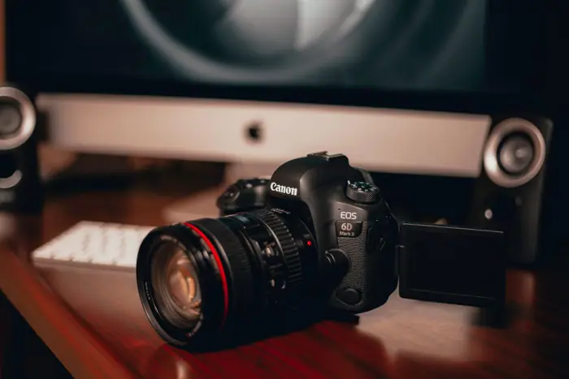

Canon EOS R8 Mark II Announced: Our thoughts and reaction

What happened
Y.M.Cinema Magazine reported: “Fujifilm’s New Cinema Announcement Is a Gimmick. And That’s the Point” [5].
Canon Rumors framed the same development as: “Canon EOS R8 Mark II Announced: Our thoughts and reaction” [1].
6 distinct outlets were tracked covering this story today.
How outlets are reporting it
Canon Rumors: “Canon EOS R8 Mark II Announced: Our thoughts and reaction” [1]
Tech My Money: “Canon EOS R8 Mark II Adds IBIS and Classic Camera Style” [2]
TechRadar: “Canon EOS R8 Mark II review” [3]
Camera Jabber: “Canon EOS R8 Mark II vs EOS R8: should you upgrade?” [4]
Y.M.Cinema Magazine: “Fujifilm’s New Cinema Announcement Is a Gimmick. And That’s the Point” [5]
The Verge: “I played with the Lego Smart Brick” [6]
Background and context
This brief aggregates 6 independent publishers covering the same event; each headline in the section above reflects that outlet’s own framing. Full original reporting is linked in the sources panel below.
Why it matters and what to watch
Sustained coverage across 6 outlets signals this story is developing and likely to move.
For the latest figures, official statements and corrections, follow the linked originals.
Sources & further reading
- Canon Rumors Canon EOS R8 Mark II Announced: Our thoughts and reaction
- Tech My Money Canon EOS R8 Mark II Adds IBIS and Classic Camera Style
- TechRadar Canon EOS R8 Mark II review
- Camera Jabber Canon EOS R8 Mark II vs EOS R8: should you upgrade?
- Y.M.Cinema Magazine Fujifilm’s New Cinema Announcement Is a Gimmick. And That’s the Point
- The Verge I played with the Lego Smart Brick